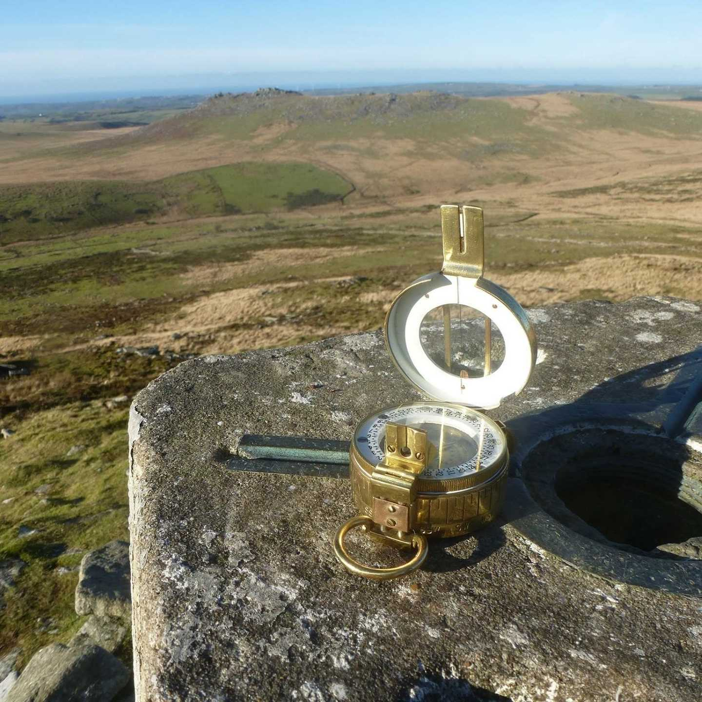

There are few things in life as refreshing as lacing up your walking boots, slinging a rucksack over your shoulder and setting off with a map and a compass to guide you.
Ever since I was a small boy, my parents and grand-parents have shared their love of walking with me, and encouraged me to get outside whenever the opportunity arose. It was they, who taught me how to read a map and compass, and also instilled in me a sense of exploring the world around us. Together we got lost, found our way back, learnt to trust the tools we had to hand, the tools that nature furnished us with and to tread the paths least trodden.
Many of my favourite walks are included on these pages. Some I walked as a child, all of them I have walked as an adult. Some were shown to me by my family, some have been shared with me by friends, and some I have stumbled across just because I was looking for a new area to walk. I have had the good fortune to be able to enjoy them all whilst out and about around my beloved Cornwall, and look forward to adding more that have, to date, eluded me.
The walks within these web pages are separated into the old administrative shires of mainland Cornwall – The Cornish Hundreds - in an effort to allow us to quickly decide on a favoured area to walk and then search the correct pages for a desired walk. However, it is also hoped that in so doing we will all explore the history of each area and learn more about the history and the landscape around us.
My late Grandfather wrote walking books (Walking Cornwall Volumes 1, 2 & 3), and it is my hope that one day I shall be able to say the same. Therefore, I am in the process of writing a walking book for families with young children and/or those who share my other passion of Cornwall – its history.This book is provisionally titled Walking With Legends, as it is my intention to suggest short walks that are centred around a Cornish legend, therefore adding an incentive for younger members to be encouraged outdoors, and for all members to immerse themselves in the landscape (both seen and unseen).
I look forward to one day letting you know that it has actually been published!
In the meantime (and afterwards) I hope that you will enjoy and be inspired by the walks on these pages, and that, like me are able to share them with those you hold closest to you.
Simon Vage
Vagewalking